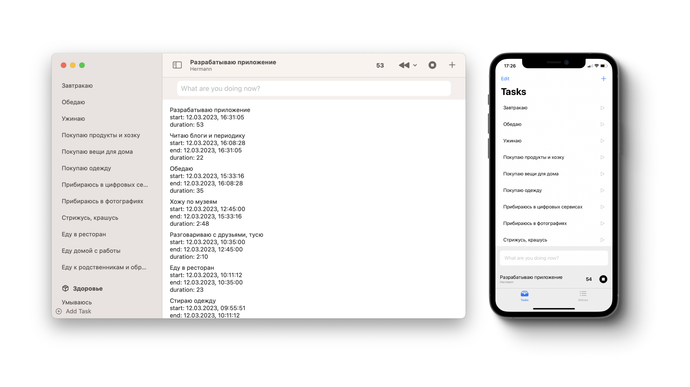

Hermann is a time tracker with minimal friction for macOS, iOS and watchOS
Description
Requires macOS 15 Sequoia, iOS 18, watchOS 11 or later.
While Hermann is in public beta, you can use it for free through TestFlight.

Description
Requires macOS 15 Sequoia, iOS 18, watchOS 11 or later.
While Hermann is in public beta, you can use it for free through TestFlight.
ICON
Не пиздит данные, всё в айклауде и у разработчика нет доступа к этим данным.
ICON
Синхронизация между macOS и iOS
ICON
Скорость, он же нативный
ICON
Показывает текущую задачу в менюбаре. может скрывать её, если экран шарится.
While Hermann is in public beta, you can use it for free through TestFlight. Get Hermann on macOS, iOS and watchOS through TestFlight ↗